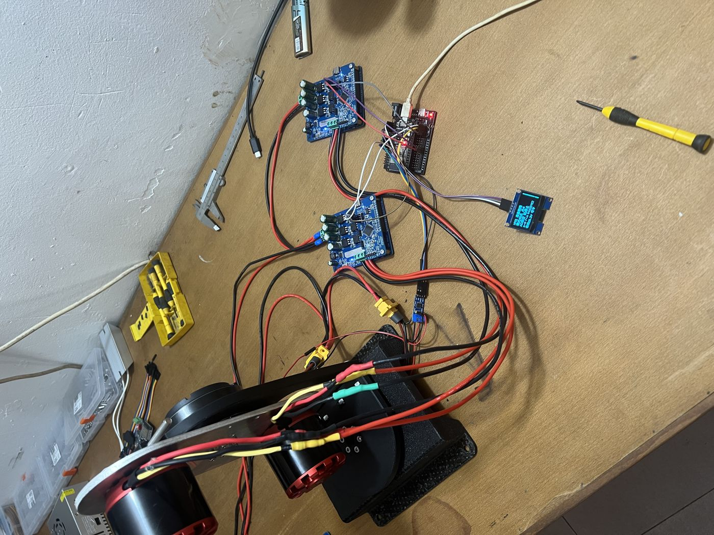
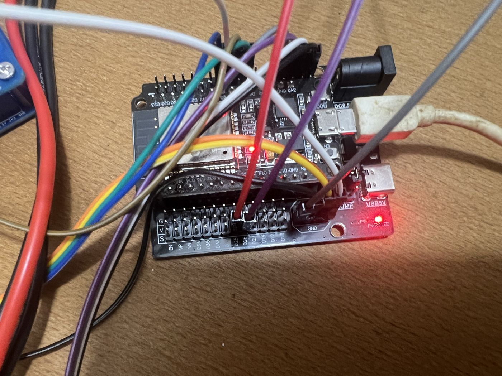
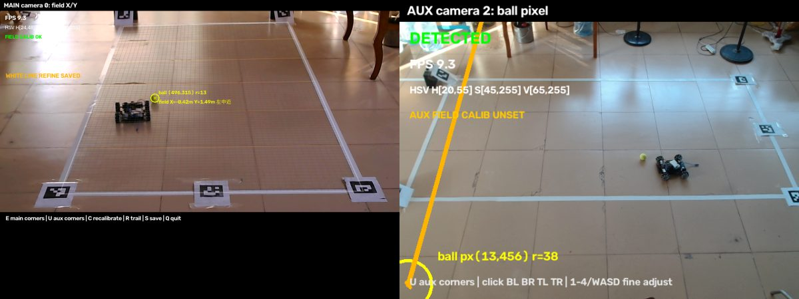
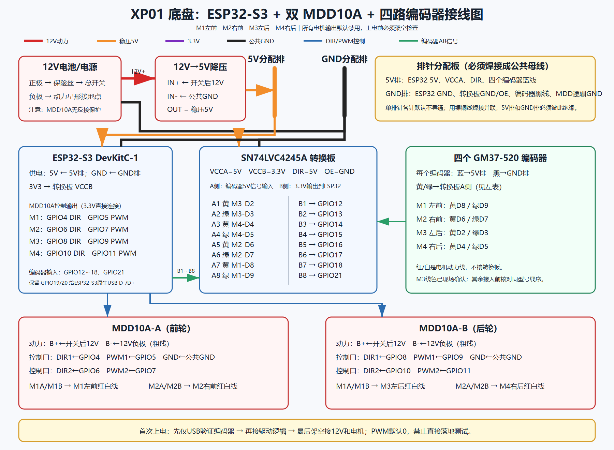
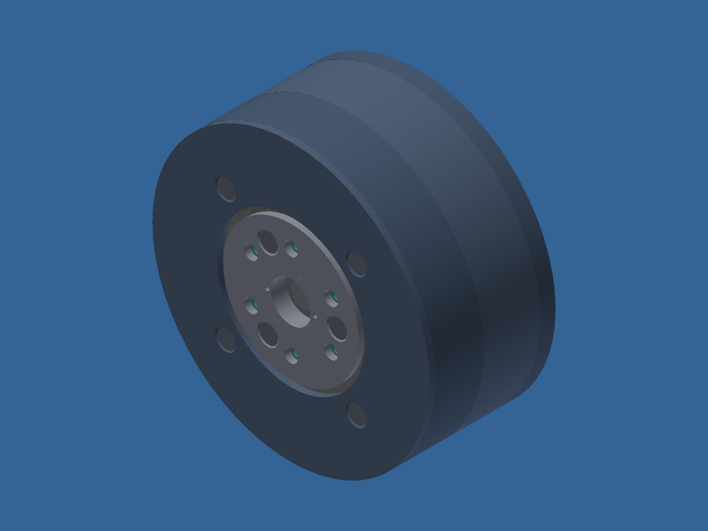
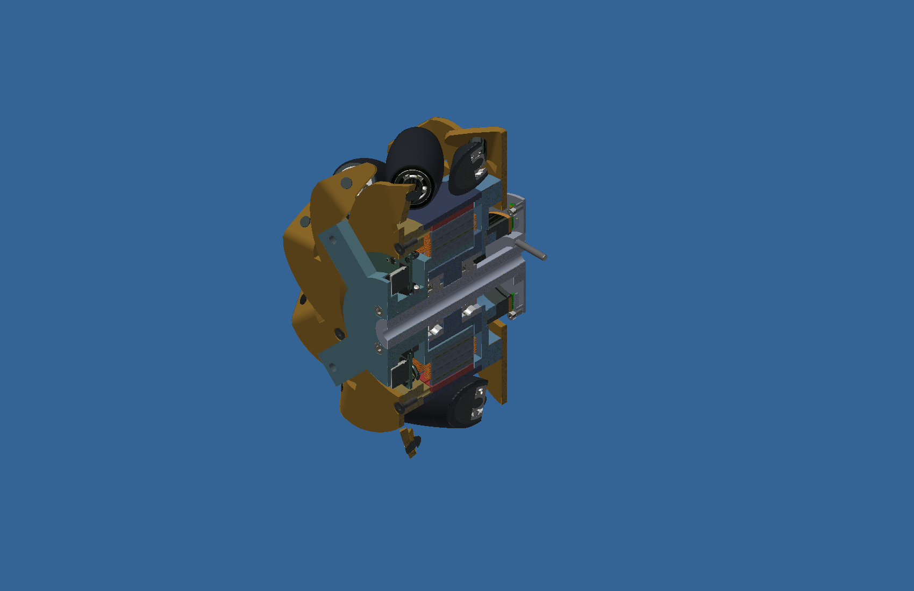
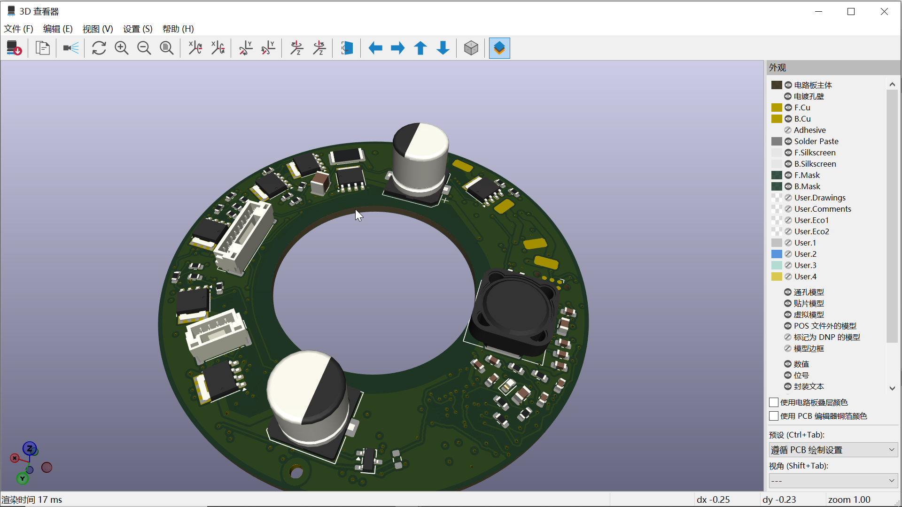

I'm a mechanical design & manufacturing engineer in Dongguan, China, with 30 years of product development experience. I help small manufacturers and founders validate product ideas at low cost before committing to tooling — through parametric CAD, standard-compliant drawings, simulation, and hands-on prototyping, all in one pipeline.
机械设计制造工程师 · 3D 建模 / 出图 / 仿真 / 样机全链路 · 帮小厂商低成本试错
Project-based freelance work, quoted at a fixed price before we start. Native CAD files and STEP are always included — you own the design.
Clean, fully editable parametric models from sketches, photos, drawings or rough concepts. Clean feature tree, design intent preserved — not dumb solids. DFM check included.
Manufacturing-ready drawings to ISO/GB conventions: dimensioning, GD&T where it matters, surface finish, complete title blocks. PDF + DWG + native files. Tolerances assigned by assembly function, not decoration.
Static stress/strain analysis and mechanism motion checks before you cut steel: max stress, deformation, safety factor, pass/fail against your criteria — plus concrete redesign suggestions where it fails.
The full mechatronics loop: 3D printing, machining, casting, electrical control design, component sourcing, microcontroller programming support, wiring and debugging — delivered as a machine that runs, not just geometry.
An AI-assisted workflow for speed, held to old-school drawing-office discipline: every release passes design review, DFM and process checks. AI drafts fast; engineering judgment signs off.
Requirements, constraints and feasibility — including the red flags, stated up front.
Rapid structure iteration in Inventor / SolidWorks / Fusion 360.
Stress and motion checks; wall thickness, draft, tolerances and assembly fit reviewed.
3D printing, machining or casting — whichever validates the design cheapest.
Control scheme, sourcing list, wiring and debugging guidance until it runs.
My own R&D programs, shown with their real status — what is verified, and what is still in progress. Client work stays confidential; more detail available under NDA.
The program. A tennis training machine with adjustable speed, spin and direction: twin launch wheels on a two-axis (pitch / yaw) aiming rig, sequenced by one controller with a proper safety chain.
What is built and verified. 36 V power bus with layered supplies and emergency stop; dual VESC drives (UART) on 6364 200 KV launch motors and two RobStride RS01 joint motors sharing a CAN bus; modular ESP32 firmware with an OLED status display, a browser console and a phone control page. The interlock sequence — self-check → homing → lock → standby → launch enable — is implemented, and a 40-point no-ball aiming patrol runs end to end. Live-ball launch tests have been performed. Patents are being filed on the mechanism and control method; structural details are available under NDA.
Still in progress. Ball feeding, landing-point calibration and continuous live-ball reliability — stated plainly, because an EVT prototype is not a finished product.


The problem. A camera sees pixels; a chassis needs court coordinates. This mobile base has to find a tennis ball on the court and drive to it — calibration is the whole game.
What I built. Off-court USB cameras with OpenCV tracking (HSV + motion/shape filtering); court calibration by ArUco markers, corrected with white-line fitting and manual four-corner trim, saved per camera. The chassis is an ESP32-S3 with dual MDD10A drivers and four encoder motors in closed-loop RPM control, with Wi-Fi telemetry, OTA updates and an 800 ms communication watchdog that stops the vehicle if the link dies.
Verified results. 300 RPM closed-loop re-test passed on all four wheels (4-second averages 304.7 / 306.7 / 296.1 / 306.4 RPM); ground run of about 1.2 m in ~1.8 s at 300 RPM; 50 software tests passing at handover. Continuous high-speed interception of bounced balls is the next development stage, not a claim.


The work. A compact cycloidal reducer, Ø90 × 41 mm, 50:1, with twin eccentric discs, pin-and-roller set and a disassembly-friendly bearing arrangement — designed natively in Inventor, not sketched.
Verification discipline. Both cycloidal disc profiles were read back at 40,050 points each and checked against the generating parameters (numerical agreement ≈ 0.00004 mm — a geometry check, not a machining claim); 13 input and 25 output poses were position-checked, and a motion preview generated. Load and life testing have not been performed yet, and the page says so.

The work. A mecanum wheel with its out-runner motor, driver PCB and absolute encoder integrated into the hub — no external transmission, a tight installation envelope, and a two-piece folded sheet-metal wheel frame with true flat-pattern development.
Where it stands. Native Inventor assembly built with traceable content-center standard parts (63 instances); the 3-page drawing set passed an independent structural assembly review. Manufacturing release and driver-board bring-up are in progress — design-stage work, presented as such.


The work. A pipeline that connects AI agents to professional CAD with an audit trail: task in → native CAD → read-back verification → drawing review. A read-only MCP channel to Autodesk Inventor is verified end to end (handshake, tool enumeration, health checks); native modeling runs through COM automation — for example a 24-slot / 71-lamination / 21-turn stator geometry created, saved and read back — and exact B-rep work (booleans, mass properties, STEP exchange) runs on the SMLib kernel via USD BRep.
Why it matters to clients. The same tooling iterates your design: faster revisions, every claim about the model backed by read-back numbers instead of screenshots.
Small, practical references I use myself — free to use, values verified against GB/T standards.
Searchable mechanical-design formulas with built-in calculators: fits, threads, gears, springs and more.
The software and processes behind the work above.
Send a sketch, a photo, or even a rough description — I'll reply with feasibility, a fixed-price quote and a timeline. NDA welcome; all files stay confidential.